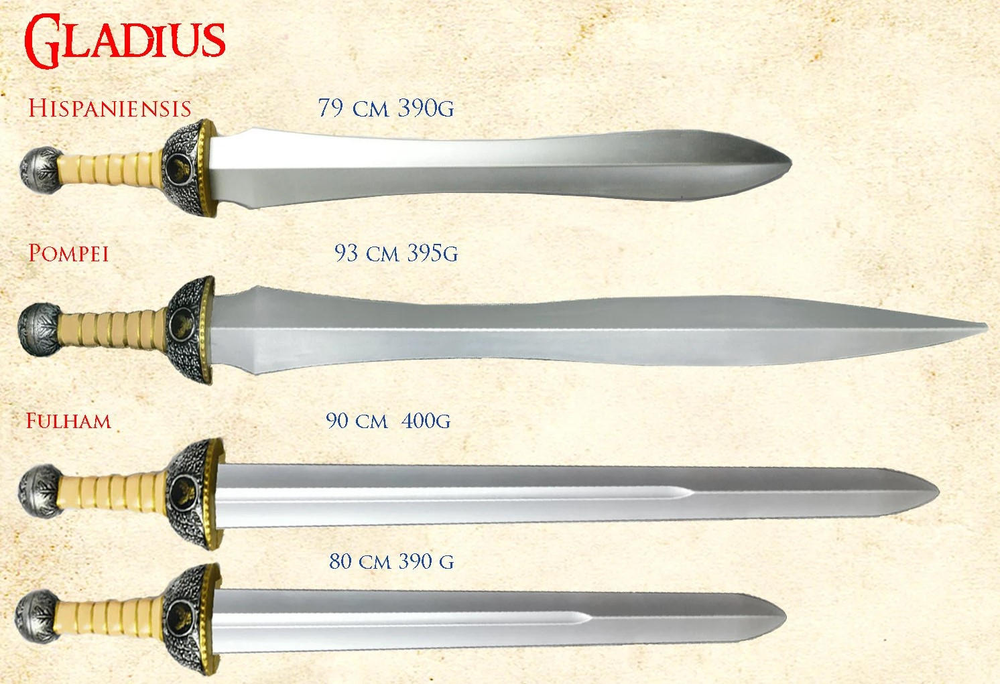
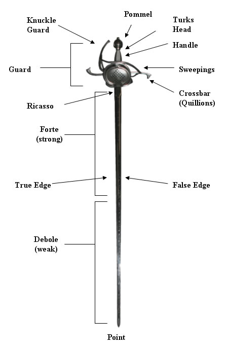
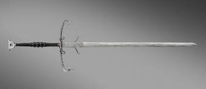
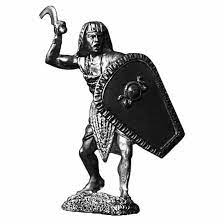
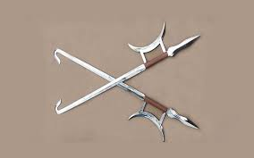
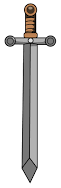

Gladius is a Latin word properly referring to the type of sword that was used by ancient Roman foot soldiers starting from the 3rd century BC and until the 3rd century AD. Romans improved the weapon depending on how Roman battle units waged war and also created a number of variants. Some of the primary variants were:


Rapier is a cut and thrust weapon originating from Spain arount the middle of the 16. century also known as espada ropera ('dress-sword') a name it was given because it was carried as an accessory to clothing, generally used for fashion but also as a weapon for dueling, self-defense and as a military side arm.
Rapiers often have complex, sweeping hilts designed to protect the hand wielding the sword. Rings extend forward from the crosspiece. In some later samples, rings are covered with metal plates, eventually evolving into the cup hilts of many later rapiers.
Various rapier masters divided the blade into two, three, four, five or even nine parts. The forte, strong, is that part of the blade closest to the hilt; in cases where a master divides the blade into an even number of parts, this is the first half of the blade.
Rapiers are single-handed weapons and they were often employed with off-hand bucklers, daggers, cloaks and even second swords to assist with defense. A buckler is a small round shield that was used with other blades as well, such as the arming sword.
Even though the slender blade of rapier enables the user to launch quick attack at a fairly long and advantaged distance between the user and the opponent and the protective hilt can deflect the opponent's blade when he or she uses rapier as well, the thrust-oriented weapon is weakened by its bated cutting power and relatively low maneuverability at a closer distance, where the opponent has safely passed the reach of the rapier's deadly point.
The Zweihänder is a large two-handed sword that was used primarily during the 16th century. It was developed from the longswords of the Late Middle Ages and became the hallmark weapon of the German Landsknechte from the time of Maximilian I and during the Italian Wars of 1494–1559.
The weapon is mostly associated with either Swiss or German mercenaries known as Landsknechte, and their wielders were known as Doppelsöldner. However, the Swiss outlawed their use, while the Landsknechte kept using them until much later.
Some modern historical European martial arts groups, specifically ones focusing on the German longsword styles, use some Zweihänders with less pronounced Parierhaken for training and tournament purposes.
These less pronounced parrying hooks are sometimes colloquially referred to as "Schilden", or literally "shields" in German, as they are used to catch incoming opposing blades.
Throughout the Middle Ages and Renaissance, European swordsmiths were capable of producing high-quality steel blades that hold its edges. Given its massive size, zweihanders rarely had full tempered blades, though earlier swordsmiths likely forge-tempered them using excellent steel. Today, swordsmiths craft replicas from high carbon steel, but these tempered blades are often shorter than historical examples. Some are decorative swords with stainless steel blades.


The khopesh is an Egyptian sickle-shaped sword that developed from battle axes. Its blade is only sharpened on the outside portion of the curved end but although they often have a clearly sharpened edges, many examples have dull edges that apparently were never intended to be sharp. It may therefore be possible that some khopeshes found in high-status graves were ceremonial variants. Various pharaohs are depicted with a khopesh, and some have been found in royal graves, such as the two examples found with Tutankhamun.
The word khopesh may have been derived from "leg", as in "leg of beef", because of their similarity in shape. The hieroglyph for ḫpš ('leg') is found as early as during the time of the Coffin Texts.
The early Egyptian sword was bronze-made, in which the blade and handle were generally casted as one rather than forged. Iron and steel versions later replaced Bronze-made khopesh swords. Today, modern bladesmiths craft khopesh from high carbon steel, damascus steel, and other metals.
The hook sword is a Chinese weapon traditionally associated with northern styles of Chinese martial arts and Wushu weapons routines, but now often practiced by southern styles as well. It has a crescent moon handguard and a hook at the end of the blade. It is also known as fu tao or gou and usually comes in pairs, hence called the double hook swords. Unlike regular swords, it consists of four weapons combined in one: the hook, blade, crescent, and spike.
Back in the day, high-quality hook swords were more expensive to make than the traditional long swords and sabers. Still, most hook swords used in training were well-tempered, high-carbon steel. Today, you can find these swords in varying materials suited for different purposes.
The hook sword is one of the kung fu weapons, widely used in both northern and southern styles. In the Tian Shan Pai system, practitioners utilize the traditional use of the sword, especially the crescent and spike. In Ba Gua Zhang, practitioners use the hook sword in sparring and fighting outside of solo practice.

 |
Avg. measures | Gladius | Rapier | Zweihänder | Khopesh | Hook Sword |
| Blade length (cm) | 65-70 | 104 | 140 | ~50 | 53 | |
| Blade width (cm) | 6 | 2.5 | 5 | 2.3 | 3.7 | |
| Weight (kg) | 0.7 | 1 | 2 | 700 | 1.2 |